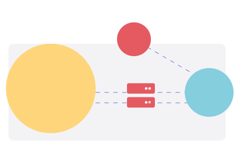

為什麼需要 SRMAS 系統資源監控管理平台？
對於 IT 管理者來說，各個伺服器散落在不同地點且分別提供不同的服務，因此需自動化監控 IT 設備運作狀況，才能在發生故障時收到告警資訊，及早發現及早修復，縮短停止服務的時間。
以前系統監控困境
- 網路架構愈加複雜，難以實現跨網路區域管理
- IT 要監控海量網路流量與各種設備健康狀況，難以面面俱到
- 總是設備服務中斷很久之後才進行維修，造成營運中斷時間長
SRMAS 能夠做到即時回傳、集中管理
自動化、可視化的集中監控
- 監測網路裝置連線狀態
- 提供裝置效能數據紀錄
- 記錄網路裝置流量
- 檢查服務運作狀態
防火牆
網路設備
主機
儲存設備
印表機
SRMAS 儀表板
裝置可用
流量排行
線路監控
告警通知
狀態監控
告警服務（規則設定、訊息樣板、告警發送)
即時/週/月/年 報表
網路氣象圖
SRMAS 系統資源監控管理平台的重點功能
設備效能管理
- 提供伺服器硬體監控
- 提供各種網通設備監控 (Router、Switch、Firewall、無線 AP)
- 顯示作業系統版本，以利判斷是否安裝至最新版本，降低漏洞攻擊。
自訂告警發送機制
- 可設定告警值（Threshold），當超過告警值時系統會即時且自動透過 E-mail 或簡訊發出告警通知。


線路品質
- 針對連網設備進行網路品質監測與斷線測試，如有異常可即時告警。
專線網路流量狀態
- 網路流量的可視化
- 網路管理與安全研究數據的可視化，包括網路氣象圖、熱區顯示圖等。


流量分析
- 提供主機之網路流量分析功能，包含封包數、連線數等流量統計與走勢圖。